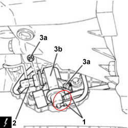

1048OA AIR INTAKE/VACUUM CIRCUIT CHECK
- Path
- Test > 10 ENGINE > 1048 ENGINE AIR SUPPLY CIRCUIT > 1048O ENGINE AIR SUPPLY SYSTEM TESTS > 1048OA AIR INTAKE/VACUUM CIRCUIT CHECK
- Kind
- test / check procedure
- Applies to
- engines: 2.4 JTD 20v; all production periods
- Interactive page
- https://sloeber94.github.io/elrnDB-aBrrSpdr/en/#/946003529
Applies to: engines: 2.4 JTD 20v; all production periods
CHECK TO BE PERFORMED | RESOLUTION IF THE CHECK IS NOT OK | |
|---|---|---|
1 | Check the vacuum supply system components/functions: in particular, check for leaks or blockages. Check the seal of the secondary air inlet/turborcharging system hoses. Also check for any obstructions or porosity. Check for leaks in the intercooler. Check that the pipe restriction bands in the air intake/inlet system are correctly fitted. Check the hoses and connected pipes to identify any obstructions, damage etc. Check that the debimeter is not contaminated. Check the exhaust gas turbocharger and exhaust system components/functions | If possible, renew the pipes. Otherwise replace the faulty components |
2 | Check that the air filter is not contaminated | Replace the filter element |
3 | Check that the air filter is correctly fitted | Refit correctly |
4 | Turn the ignition key to the OFF position. Disconnect the vacuum hose from the vacuum pump Connect a pressure gauge between the vacuum pump and the hose (see following figure). Start the engine, adjust to idle speed and check that the reading on the pressure gauge is -0.7 and 1.0 bars | Replace the vacuum unit |

Applies to: engines: 2.4 JTD 20v; all production periods
CHECK TO BE PERFORMED | RESOLUTION IF THE CHECK IS NOT OK | |
|---|---|---|
5 | Turn the ignition key to the OFF position. Reconnect the hose to the vacuum pump Disconnect the vacuum hose from the turbocharge actuator solenoid (see following figure). Connect the pressure gauge between the solenoid and the hose. Start the engine and adjust to idle speed. Select the following control unit at the diagnostic equipment: EDC16C39 Diesel electronic injection control unit. Carry out active diagnosis: Turbo regulator, ensuring that it is successful | Replace the solenoid valve Op. 1064B42 SOLENOID CONTROLLING TURBOCHARGER VANE POSITION ACTUATOR - R.R |

Applies to: engines: 2.4 JTD 20v; all production periods
CHECK TO BE PERFORMED | RESOLUTION IF THE CHECK IS NOT OK | |
|---|---|---|
6 | Check that the vacuum read on the pressure gauge during active diagnosis is between -0.5 and 1.0 bars. | Check the turbo pressure control solenoid is operating correctly See Test 1064BB CHECK ON OPERATION OF SUPERCHARGING PRESSURE SOLENOID VALVE (PIERBURG) |
7 | Turn the ignition key to the OFF position. Reconnect the vacuum hose to the turbocharger actuator solenoid. Start the engine and adjust to idle speed. Select the following parameters in the parameter screen: EGR valve opening and measured Air Mass. Set conditions where the EGR valve is open and check that the intake air mass is between 20 and 40 kg/h | Check the exhaust gas recovery solenoid is operating correctly |
8 | Then return to idle speed. Set conditions where the EGR valve is closed and in these conditions check that the intake air mass is between 40 and 60 kg/h | Replace the debimeter |
Topics linked from this page (7)
- 1064BB CHECK ON OPERATION OF SUPERCHARGING PRESSURE SOLENOID VALVE (PIERBURG)
- 1080CB E.G.R. SOLENOID FUNCTIONAL TEST
- 1048A VACUUM AIR CIRCUIT
- 1048A14 AIR CLEANER FILTER ELEMENT - REPLACE.
- 1060G10 AIR FLOW METER - R.R.
- 1064B42 SOLENOID CONTROLLING TURBOCHARGER VANE POSITION ACTUATOR - R.R
- 3330D30 VACUUM UNIT - R+R
Topics that link to this page (17)
- B015 ENGINE DOES NOT START (STARTER MOTOR WORKING)
- D005 ENGINE DOES NOT PRODUCE BEST PERFORMANCE
- D021 ENGINE CUTS OUT WHILST RUNNING AND THEN RESTARTS
- D009 ENGINE NOT FEELING ACCELERATOR PEDAL PRESSURE
- D014 ENGINE CUTS OUT WHEN IDLING (THEN RESTARS)
- D015 LITTLE CHANGE IN ENGINE SPEED WHEN ACCELERATOR PEDAL IS PRESSED
- D016 POOR ENGINE RESPONSE
- S003 ENGINE KNOCKING
- W010 BLACK EXHAUST FUMES
- W011 EXCESSIVE EXHAUST FUMES
- Y004 P0100 - FLOW METER (BEYOND UPPER LIMIT)
- Y005 P0100 - FLOW METER (BELOW LOWER LIMIT)
- Y023 P0234 - TURBO PRESSURE
- Y039 P0401 - EGR VALVE
- Y100 P0101 - FLOW METER SIGNAL (BEYOND UPPER LIMIT)
- Y104 P0237 - TURBO PRESSURE
- Y105 P0238 - TURBO PRESSURE